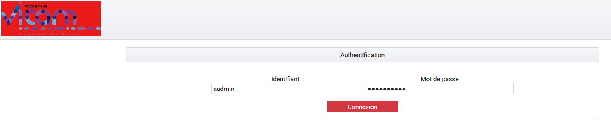
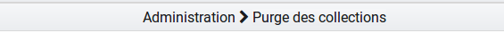
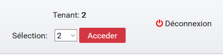

1. Recette¶
1.1. Principes généraux¶
Avertissement
L’IHM de recette est développée à des fins de test uniquement. Elle n’a aucunement vocation à être utilisée en production
Elle contient des interfaces utilisateurs permettant, par tenant, de :
- Administrer les collections MongoDB (référentiels, journaux, objets…),
- Lancer des tests (performance, fonctionnels, requêtes DSL),
- Sécuriser manuellement les journaux des opérations.
1.1.1. Accès¶
L’accès à l’IHM de recette s’effectue par un chemin différent de l’IHM démo. Par défaut, son adresse est :
addresse_de_votre_serveur/ihm-recette/#/admin/collection
Contrairement à l’IHM de démo, la sélection de tenants se fait une fois connecté. La page de connexion ne contient donc qu’un champ « Identifiant » et un champ « Mot de passe ».
Par souci de distinction visuelle avec l’interface de démo, la couleur dominante de cette IHM est le rouge.
1.1.3. Fil d’Ariane¶
Le fil d’Ariane est un élément qui permet de visualiser le chemin d’accès à la page affichée. Il est situé sur toutes les pages, en dessous du menu.
Il est composé du nom du menu dans lequel se trouve la page en cours puis de la page consultée.
1.1.4. Titre des onglets¶
Sur l’IHM recette, le titre des pages est celui du dernier nœud du fil d’Ariane, précédé du mot “Recette -”. Par exemple :
- Recette - Test Fonctionnels
- Recette - Administration des collections
1.1.5. Sélection d’un tenant¶
Lors de la connexion, l’utilisateur n’est positionné sur aucun tenant. De ce fait, ses actions d’administration sont restreintes car celles-ci sont pour la plupart liées à un tenant. Par défaut, un certain nombre de boutons sont donc grisés et inactifs.
Pour sélectionner un tenant, il suffit de choisir celui désiré dans le menu déroulant en haut à droite de l’écran et de valider sa sélection en cliquant sur le bouton « Accéder ».
Une fois le tenant sélectionné, les boutons précédemment grisés sont activés et l’intégralité de l’interface de recette est disponible.
Dans le reste de ce document, il est considéré que l’utilisateur s’est placé dans le tenant sur lequel il veut effectuer ses opérations. L’utilisateur peut changer de tenant à tout moment, en réitérant l’opération précédente.
NB : les référentiels des formats, des contextes et des ontologies externes sont liés à la plateforme et non à un tenant. L’option de suppression des référentiels des formats, des contextes applicatifs et des ontologies externes est toujours disponible, même si aucun tenant n’est sélectionné.